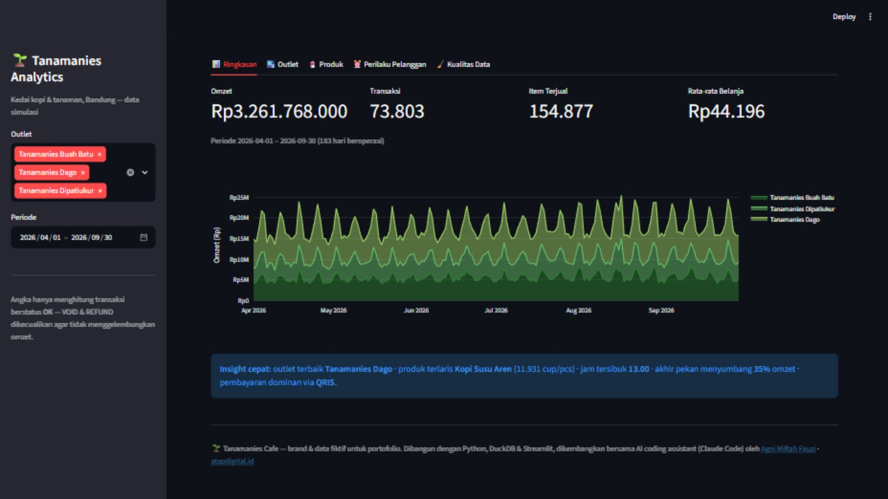
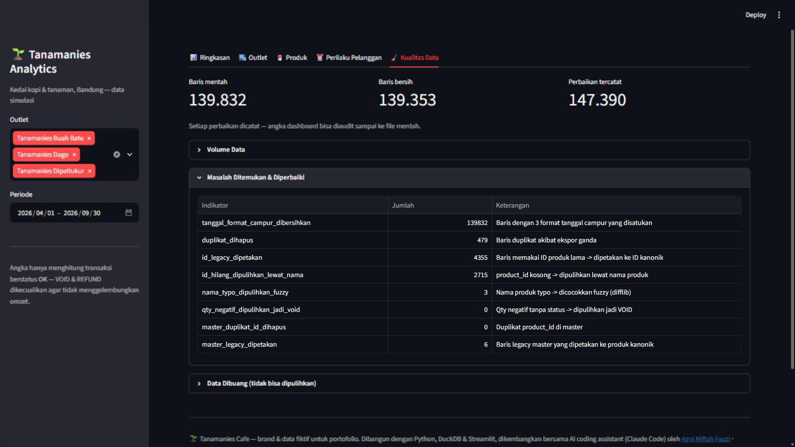
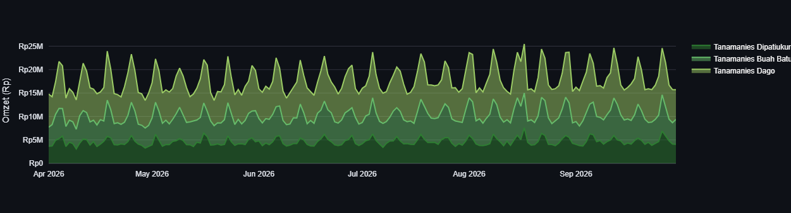

An end-to-end data system for a simulated three-outlet coffee business: dirty POS exports go in one end; a cleaned DuckDB warehouse, an executive dashboard, and an AI assistant that can query the numbers come out the other.
Year
2026
Role
Sole developer — pipeline, warehouse, dashboard, MCP
Real multi-outlet F&B businesses live with this: every outlet runs a different POS,
every export is dirty — dates in three formats, payment methods spelled sixteen ways,
outlet names inconsistent, duplicate exports, legacy product IDs — and management has
no single source of numbers they can trust.
Tanamanies Cafe is a fictional Bandung plant-café brand; the data is generated to be
dirty on purpose. The project demonstrates the full cure: one command turns raw POS
exports into an audited warehouse, a live dashboard, and AI-accessible metrics.
How much data, and what's inside
The generator produces 18 POS export files covering April–September 2026
for three outlets — Dipatiukur, Buah Batu, and Dago — totalling
139,832 raw rows. After cleaning, 139,353 rows survive into the warehouse.
Each row is a sales line: date, outlet, product, category, quantity, unit price, payment
method, and order status (completed, VOID, or REFUND).
479 duplicates
Duplicate export rows detected and removed — every removal logged.
4,355 legacy IDs
Old product IDs mapped to the current master via exact matching.
2,715 missing IDs
Rows with no ID recovered by matching product names (difflib fuzzy matching, 0.8 cutoff).
3 date formats
Mixed date formats normalised into one canonical type.
16+ payment labels
Inconsistent payment-method spellings unified into a controlled vocabulary.
Nothing is thrown away silently: every fix and every discarded row is recorded in a
data-quality report — an audit trail, not a shrug.
The warehouse
Cleaned data lands in DuckDB as a small star schema — fact_sales,
dim_product, dim_outlet — plus 6 analytic SQL views that
define every metric once. The dashboard, the MCP server, and manual queries all read
the same views, so the numbers can never disagree with each other.
The dashboard — five tabs
Ringkasan
Headline KPIs and the omzet trend line for the selected period.
Perbandingan outlet
Dipatiukur vs Buah Batu vs Dago — revenue and traffic side by side.
Produk terlaris
Which products actually carry each outlet.
Jam ramai
Heatmap of busy hours for staffing decisions.
Komposisi pembayaran
How customers pay — and a full data-quality audit tab on top.
VOID and REFUND orders are stored in the fact table with a status column but excluded
from every revenue figure — cancellations stay analysable without inflating omzet.

Real dashboard — Ringkasan (overview) tab.

Real dashboard — Kualitas Data tab: the cleaning audit trail, row by row.

Omzet by outlet, April–September 2026 — three outlets, one month of weekly peaks at a glance.
AI access via MCP
A local MCP server (src/mcp_server.py) lets any MCP client — Claude Desktop, Cursor,
ZCode — query the warehouse in natural language. Four read-only tools:
ringkasan_periode, top_produk, penjualan_harian, and
jalankan_sql. Safety rails: only SELECT/WITH statements accepted, results capped
at 200 rows. Ask it "compare the three outlets in August, and which products carry Dago?"
and it answers from the cleaned data — the same views the dashboard uses.
Testing & reproducibility
42pytest unit tests covering every cleaning rule
seed 42RNG locked — regenerated data is always identical
Raw exports and the built database are never committed — only code, samples, and the
quality report. The same discipline you'd want around real production data.